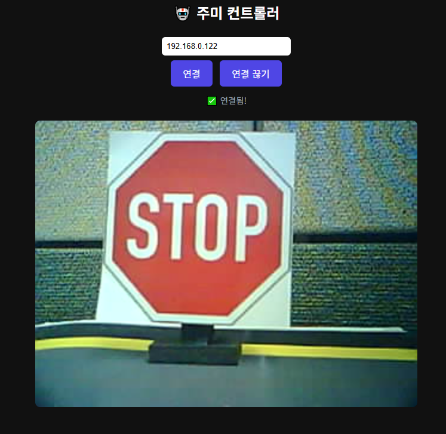

QUICKSTART
🚀 지금 바로 시작해봐요
아래 순서대로만 따라하면 5분 안에 로봇 카메라 화면을 볼 수 있어요!
1
<!-- 주미 로봇 기본 웹앱 -->
<!DOCTYPE html>
<html lang="ko"><head>
<meta charset="UTF-8">
<meta name="viewport"
content="width=device-width,initial-scale=1">
<title>주미 컨트롤러</title>
<style>
body{font-family:sans-serif;background:#111;color:#fff;text-align:center;padding:20px}
input{padding:8px;border-radius:6px;border:none;width:200px;margin:4px}
button{padding:10px 20px;border-radius:6px;border:none;background:#4f46e5;
color:#fff;font-size:1rem;cursor:pointer;margin:4px}
button:hover{opacity:.85}
canvas{background:#000;border-radius:8px;margin-top:16px;max-width:100%}
#status{margin:8px 0;font-size:.9rem;color:#9ca3af}
</style>
</head><body>
<h2>🤖 주미 컨트롤러</h2>
<input id="ip" placeholder="주미 IP 주소 (예: 192.168.0.63)">
<br>
<button onclick="connect()">연결</button>
<button onclick="disconnect()">연결 끊기</button>
<div id="status">연결 전</div>
<canvas id="cam" width="640" height="480"></canvas>
<script>
let ws, ctx = document.getElementById('cam').getContext('2d');
function connect() {
const ip = document.getElementById('ip').value.trim();
if (!ip) { alert('IP를 입력하세요!'); return; }
ws = new WebSocket('ws://' + ip + '/ws');
ws.binaryType = 'arraybuffer';
ws.onopen = () => {
document.getElementById('status').textContent = '✅
연결됨!';
ws.send('stream');
};
ws.onmessage = (e) => {
const blob = new Blob([new
Uint8Array(e.data)], {type:'image/jpeg'});
const url = URL.createObjectURL(blob);
const img = new Image();
img.onload = () => { ctx.drawImage(img, 0, 0, 640, 480); URL.revokeObjectURL(url); };
img.src = url;
};
ws.onclose = () => document.getElementById('status').textContent = '❌ 연결 끊김';
}
function disconnect() { if (ws) ws.close(); }
</script></body></html>
2
Chrome 브라우저로 파일을 열어요
다운로드한 zumiAI_start.html 파일을 Chrome 브라우저로 드래그하거나 더블클릭해요.
Chrome이 없다면 먼저 chrome.com 에서 설치하세요. Safari나 Internet Explorer는 잘 안 될 수 있어요.
3
주미와 같은 Wi-Fi에 연결해요
내 기기(노트북, 태블릿)가 주미 로봇과 같은 Wi-Fi에 연결되어 있어야 해요.
🔍 주미 IP 주소 찾는 방법
방법 1. 주미 화면 확인
주미를 켜면 LCD 화면에 IP가 표시돼요. 예) 192.168.0.63
방법 2. 선생님께 물어보기
수업 시간에는 선생님이 IP를 알려주실 거예요!
IP 예시: 192.168.0.63 · 192.168.1.100 · 10.0.0.5

4
IP를 입력하고 연결 버튼을 눌러요! 🎉
웹앱의 입력창에 주미 IP를 입력하고 연결 버튼을 누르면 카메라 화면이 나타나요!

화면에 로봇 카메라 영상이 보이면 성공이에요! 이제 AI에게 기능을 추가해달라고 해봐요.
WHAT'S NEXT
✨ 기본이 됐다면, 이런 걸 추가해봐요!
단계별 가이드를 따라가면서 기능을 하나씩 늘려봐요.
각 단계 안에 AI에게 할 말도 다 준비되어 있어요!
🔗
STEP 1
연결하고 보기
전체화면 · 필터 · 사진저장
💡
STEP 2
표현하기
LED · 표정 · 사운드 · LCD
🚗
STEP 3
움직이기
조종 · 도형 · 라인트레이서
🤖
STEP 4
AI 연결하기
얼굴 · 손동작 · 물체감지
각 단계 안에 AI에게 복사해서 쓸 수 있는 요청 문장이 준비되어 있어요. 클릭 한 번이면 됩니다!
💬
중요한 건 코드가 아니라 아이디어예요!
"주미가 사람을 보면 인사하게 해줘"처럼 자연스럽게 말하면 됩니다.
"주미가 사람을 보면 인사하게 해줘"처럼 자연스럽게 말하면 됩니다.
TROUBLESHOOTING
😓 막히면 여기를 봐요
가장 많이 막히는 상황들이에요. 하나씩 확인해보세요!
가장 흔한 원인 3가지를 확인하세요:
1️⃣ IP 주소가 맞나요? 주미 LCD 화면에 표시된 IP를 정확하게 입력했는지 확인하세요.
2️⃣ 같은 Wi-Fi인가요? 내 기기와 주미가 같은 Wi-Fi에 연결되어 있어야 해요. 모바일 데이터로는 안 돼요!
3️⃣ 주미가 켜져 있나요? 주미 전원이 켜진 상태인지 확인하세요.
1️⃣ IP 주소가 맞나요? 주미 LCD 화면에 표시된 IP를 정확하게 입력했는지 확인하세요.
2️⃣ 같은 Wi-Fi인가요? 내 기기와 주미가 같은 Wi-Fi에 연결되어 있어야 해요. 모바일 데이터로는 안 돼요!
3️⃣ 주미가 켜져 있나요? 주미 전원이 켜진 상태인지 확인하세요.
연결 직후 1~2초 정도 기다려보세요. 카메라가 시작하는 데 시간이 걸릴 수 있어요.
그래도 안 된다면 연결을 끊었다가 다시 연결해보세요.
Internet Explorer나 오래된 브라우저를 사용 중이라면 Chrome으로 바꿔보세요.
그래도 안 된다면 연결을 끊었다가 다시 연결해보세요.
Internet Explorer나 오래된 브라우저를 사용 중이라면 Chrome으로 바꿔보세요.
다운로드한 파일 이름과 파일의 위치를 확인하세요.
위치가 보이지 않으면 다시 다운로드해보세요.
다운로드된 파일 아이콘이 Chrome 로고처럼 보이면 성공이에요!
위치가 보이지 않으면 다시 다운로드해보세요.
다운로드된 파일 아이콘이 Chrome 로고처럼 보이면 성공이에요!
이럴 때는 AI에게 이렇게 다시 요청해보세요:
"방금 만들어준 코드를 실행했는데 [어떤 문제]가 생겼어. 고쳐줘"
문제를 구체적으로 설명할수록 AI가 더 잘 고쳐줘요.
예: "연결 버튼을 눌렀는데 아무 반응이 없어", "화면이 하얗게만 나와"
"방금 만들어준 코드를 실행했는데 [어떤 문제]가 생겼어. 고쳐줘"
문제를 구체적으로 설명할수록 AI가 더 잘 고쳐줘요.
예: "연결 버튼을 눌렀는데 아무 반응이 없어", "화면이 하얗게만 나와"
Android 스마트폰의 Chrome 브라우저에서는 잘 됩니다!
HTML 파일을 Google Drive나 카카오톡으로 전송한 뒤, Chrome으로 열어보세요.
⚠️ iPhone(iOS)은 Safari 브라우저 제한으로 잘 안 될 수 있어요. 가능하면 PC나 Android를 사용하세요.
HTML 파일을 Google Drive나 카카오톡으로 전송한 뒤, Chrome으로 열어보세요.
⚠️ iPhone(iOS)은 Safari 브라우저 제한으로 잘 안 될 수 있어요. 가능하면 PC나 Android를 사용하세요.
CHECKLIST
✅ 다 됐나요? 확인해봐요
아래 항목을 하나씩 클릭해서 완료 표시를 해보세요!
⚠️ 페이지를
새로고침하면 체크가 풀려요. 다 완료하면 바로 다음 단계로 이동하세요!
HTML 파일을 다운로드했어요
Chrome으로 파일을 열었어요
주미 IP를 찾았어요
연결 버튼을 누르니 "✅ 연결됨!"이 떴어요
카메라 화면이 보여요 🎉
다 체크했다면 다음 단계로 가볼까요? 이제 버튼도 만들고 LED도 켜고 로봇을 움직여봐요!
NEXT STEPS
📚 다음엔 뭘 배울까요?
단계별로 기능을 추가해나가요. 하나씩 완성할수록 더 멋진 로봇이 됩니다!
💬
중요한 것은 코드가 아니라 아이디어예요!
만들고 싶은 게 있으면 AI에게 자연스럽게 말해보세요.
"주미가 사람을 보면 인사하게 해줘" — 이것도 가능해요!
만들고 싶은 게 있으면 AI에게 자연스럽게 말해보세요.
"주미가 사람을 보면 인사하게 해줘" — 이것도 가능해요!